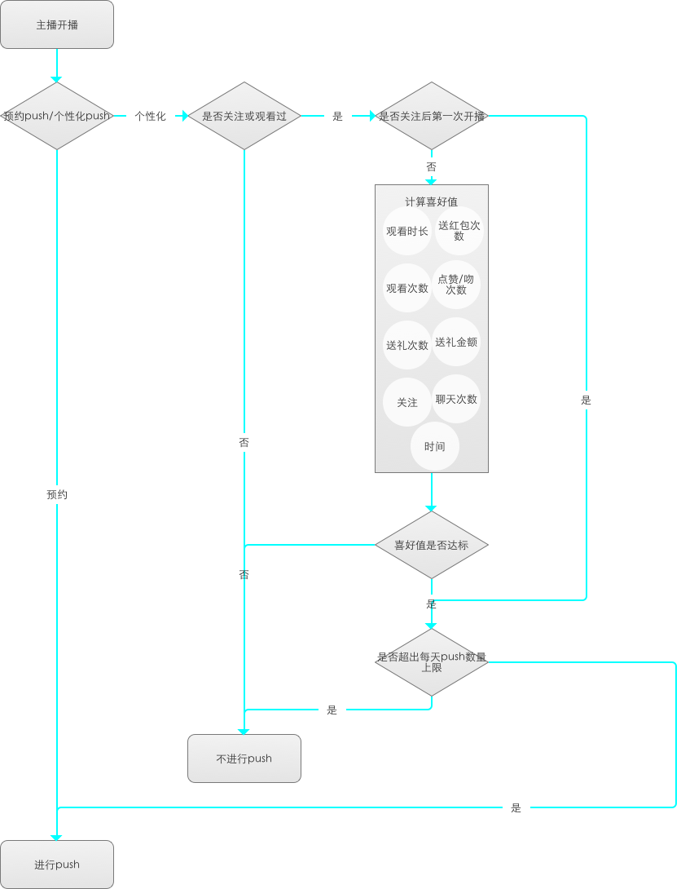

PUSH逻辑优化
定位
现有push方案带带来用户push频繁接受通知，影响用户体验；旨在提高用户体验，提高push被打开的相对占比
需求说明
• 取消push和关注的绝对关联
原当关注后的主播开播之后，用户都会收到push通知提醒，现取消这种绝对关联，取而代之的是关注被作为影响是否push的因素之一，具体规则参见以下需求。

• 个性化计算推荐push
先严格控制质量，加强对条件的要求。逐步观察数据再放开条件要求。不包括运营push和预约push。
1：push的直播内容，主播一定是用户观看过或者关注过的主播，这作为第一前提，没有观看过或者关注过的主播开播，用户均不会受到push。
2：在第一前提下，分析用户产生的观看、聊天/留言、点赞、送礼、送红包、时间等行为。判断是否满足足够喜欢，从而判断是否应该push。
3：当天内的push次数进行限制，工作日push次数不多余 3 次。周末及节假日push次数不大于 5 次。
4：push后，用户不点击的内容，适当减少其喜欢程度，简介减少该主播的push通知，和整体push次数。
5：关注的主播在用户关注主播后的第一次开播，直接视为用户喜欢这场直播。
6：主播长时间未开播然后再开播，再次开播，在时间上需要特殊处理，倾向于push给用户。
